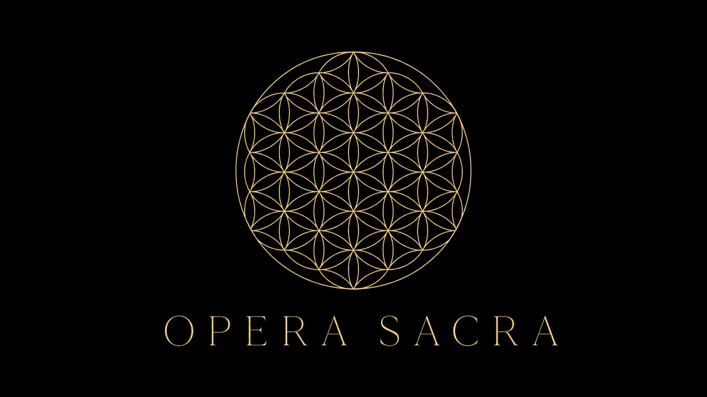
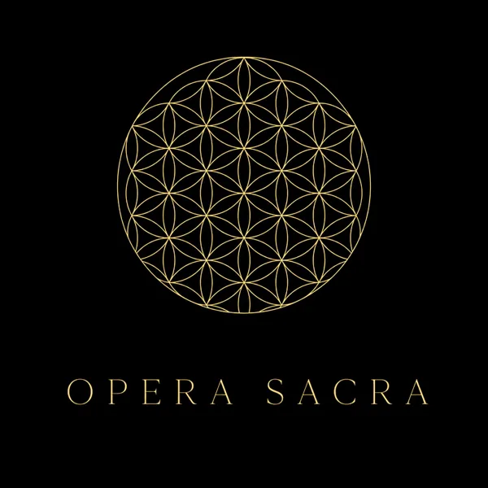

The Divine Accord
From the Crystalline Heart of Earth
to the Galactic Heart of the Universe
7 Personal Chakras · 8 Spiritual Chakras · 3 Sacred Fires · One Divine Accord.
Ancient wisdom meets gravitational wave physics.
WHAT IS OPERA SACRA
Opera Sacra is a 94-page sacred arts text by Michael Barnaba exploring the intersection of spiritual authority, chakra systems (7 personal + 8 spiritual), sacred geometry, and divine harmonic theory.
THE ARCHITECTURE
Every node in the 7 Personal + 8 Spiritual Chakra system is governed by one of three harmonic principles — the agents of frequency, resonance, and synthesis.
The fundamental frequency. Grounding, structure, and the vibration of the string itself. Pythagoras heard it in the ratios of falling hammers.
The resonant chamber. Expansion, amplification, and the harmonic overtones. Fludd mapped it as the Celestial Octave — Voice, Vision, Transcendence.
The bowing action. The creative excitation that draws sound from silence. Kepler heard it in planetary speeds — the universe as celestial choir.
FREE · START HERE
The complete 7 Personal + 8 Spiritual Chakra frequency system on a single page. Every chakra, every fire, every harmonic interval — your initiation begins here, and it costs nothing.
Download Free →THE FOUNDATION
Ancient seers and modern physicists have been measuring the same thing. Opera Sacra is where their measurements finally meet.
THE BOOK

A unified theory of cosmic harmony — from the Pythagorean monochord to LIGO gravitational waves. Pythagoras. Plato. Boethius. Kepler. Fludd. The Emerald Tablet. All converge on the same truth: the universe is a living chord, and you are one of its notes.
CLARITY BEFORE YOU BEGIN
Sacred arts is the practice of integrating spiritual philosophy — including sacred geometry, sound healing, and chakra systems — into creative unity and expression.
Opera Sacra maps 15 chakra points: 7 personal chakras and 8 spiritual chakras beyond the traditional system.
Michael Barnaba is a sacred arts creator and the author of Opera Sacra, developing a framework that unifies energy, divine harmony, and vibrational medicine.
Opera Sacra introduces 8 spiritual chakras beyond the traditional 7, integrating sacred sound theory and sacred geometry into a single unified system.
OPERA SACRA
Begin with the Free Map. Deepen with the Book.
Asé.